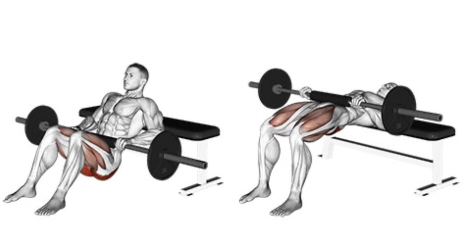

Coloca el peso adecuado en la máquina de prensa de piernas y siéntate.
Levanta las piernas y planta los pies firmemente en la plataforma. Coloca los pies en una posición cómoda, con los dedos apuntando ligeramente hacia afuera.
Agarra las asas a los lados, lleva los hombros hacia atrás y activa los abdominales.
Presiona la plataforma y estira las piernas mientras giras las asas para retirar los pasadores de seguridad.
Toma aire nuevamente y baja la plataforma doblando las rodillas.
Mantén la posición inferior por un momento y presiona la plataforma hacia arriba mientras exhalas.
Una vez que termines, estira las piernas, gira las asas para colocar los pasadores de seguridad y descansa.

Hip Thrust
Siéntate en el suelo y coloca una barra con peso sobre tus caderas.
Apoya la parte superior de tu espalda contra el borde de un banco plano de gimnasio.
Dobla las rodillas y planta los pies firmemente en el suelo.
Coloca las manos sobre la barra y agárrala con firmeza.
Activa tus abdominales y toma aire.
Empuja la barra hacia el techo apretando los glúteos y empujando con los talones.
Haz una pausa en la parte superior y baja las caderas al suelo.
Seated Calf Raise
Carga la máquina, siéntate y ajusta el cojín. Tus muslos deben quedar ajustados, permitiéndote desenganchar el peso extendiendo los tobillos.
Coloca tus muslos contra el cojín y agarra las manijas firmemente.
Respira y desengancha el peso flexionando las pantorrillas.
Coloca la barra de seguridad a un lado y flexiona los tobillos para bajar el peso hasta que sientas un estiramiento en tus pantorrillas.
Presiona con las bolas de tus pies y flexiona las pantorrillas, exhalando cerca de la parte superior.
Brazos
Bicep Curl
Acopla una barra recta a una polea baja.
Ajusta la carga en la pila de pesas al nivel adecuado.
Agáchate y sujeta la barra recta de manera uniforme con las palmas hacia arriba.
Extiende tu cuerpo y da un paso atrás (si es necesario) para levantar el peso de la pila.
Lleva los hombros hacia atrás, activa los abdominales y mantén los codos pegados a los costados.
Toma aire y flexiona el peso, manteniendo los codos firmes.
Levanta el peso hasta que las muñecas estén ligeramente más altas que los codos.
Mantén la posición superior por un momento y baja el peso lentamente, exhalando mientras lo haces.
Empuje de Tríceps con un Brazo
Selecciona la carga adecuada, coloca la polea en la posición más alta y acopla una cuerda.
Sujeta la cuerda con tu mano derecha, coloca tu codo pegado al costado y da un paso hacia atrás.
Toma una respiración profunda y activa los abdominales.
Extiende lentamente el brazo y contrae el tríceps.
Flexiona el brazo mientras exhalas.
Al terminar, sujeta la cuerda con tu mano izquierda y repite.
Pecho
Chest Bench Press
Acuéstate en el banco.
Extiende los brazos y sujeta la barra de manera uniforme, con las manos ligeramente más anchas que el ancho de los hombros.
Lleva las escápulas hacia atrás y presiónalas contra el banco.
Arquea la parte baja de la espalda y planta los pies firmemente en el suelo.
Toma aire, desengancha la barra y colócala sobre tu pecho.
Inhala nuevamente y baja la barra hasta la parte inferior de tu pecho, tocándola ligeramente.
Mantén la posición por un momento y presiona la barra hasta que tus codos estén extendidos. Exhala.
Chest Fly
Toma un par de mancuernas ligeras y siéntate en el borde de un banco plano de gimnasio.
Coloca las mancuernas sobre tus muslos y recuéstate con cuidado, manteniéndolas cerca de tu cuerpo.
Extiende los brazos y posiciona las mancuernas sobre tu pecho con las palmas enfrentadas.
Planta los pies en el suelo y lleva los hombros hacia atrás.
Toma una respiración.
Baja los brazos hacia los lados mientras mantienes los hombros estables.
Desciende hasta que tus brazos estén alineados con tu torso.
Lleva los brazos hacia adentro, tocando ligeramente las mancuernas sobre tu pecho mientras exhalas.
Espalda
Lower Back Extension
Siéntate en una máquina de extensión de espalda con las nalgas contra un cojín.
Coloca el cojín para los pies justo sobre tus pies.
El cojín superior debe estar contra la parte superior de tu espalda.
Ajusta la carga en la máquina y cruza los brazos frente a tu pecho.
Toma aire, activa los abdominales y empuja el cojín superior hacia atrás, activando los músculos de la parte baja de la espalda.
Mueve varios centímetros y lleva tu cuerpo a la posición superior mientras exhalas.
Upper Back Dumbbell Row
Toma una mancuerna.
Coloca tu rodilla derecha y tu mano derecha sobre un banco plano. Mantén tu pierna y brazo izquierdo rectos con la mancuerna en tu mano.
Lleva tus hombros hacia atrás y activa los abdominales.
Realiza el remo con la mancuerna hasta que tu codo esté a nivel del torso y aprieta por un momento.
Mantén la posición por un momento y extiende tu cuerpo mientras exhalas.
Toma otra respiración y realiza un crunch, llevando tu codo izquierdo hacia tu rodilla derecha.
Sigue alternando hasta completar la serie.
Upright Row
Agarra una barra cargada con un agarre en pronación (palmas mirando hacia atrás). Tus manos deben estar a la altura de los hombros.
Párate erguido, retrae tus omóplatos, flexiona los abdominales y respira.
Remolca la barra en línea recta desde tus caderas hasta tu pecho.
Aprieta la parte superior de tu espalda y los bíceps en la parte superior y mantén por un momento.
Extiende los brazos lentamente y exhala mientras bajas.
Abdominales
Bicycle Crunch Raised Legs
Acuéstate en el suelo, levanta las piernas del suelo y extiéndelas en el aire.
Coloca las yemas de los dedos detrás de tu cabeza o cuello.
Toma una respiración, activa tu abdomen y realiza un crunch con la parte superior de tu cuerpo.
Gira la parte superior de tu cuerpo, llevando tu codo derecho hacia tu pierna izquierda. Simultáneamente, dobla tu rodilla izquierda y acércala al codo contrario.
Baja el peso manteniendo los hombros en su lugar y exhala.
Una vez terminado, toma la mancuerna con la mano contraria, coloca tu mano y rodilla izquierda en el banco, y repite.
Knee Raise Parallel Bars
Ponte dentro de una silla romana (captain's chair) con los pies sobre una plataforma o escalones, la espalda apoyada contra el cojín y los antebrazos planos sobre las barras paralelas acolchadas.
Lleva los hombros hacia atrás, contrae los abdominales y toma una respiración.
Baja de la plataforma o escalones y sostente usando la musculatura de la parte superior del cuerpo. Mantén los hombros en su posición y evita encorvarte.
Toma otra respiración y activa los abdominales para levantar las rodillas lo más alto posible en un movimiento fluido. Mantén la posición superior por un momento.
Baja las rodillas a la posición inicial, extendiéndolas en el descenso, y detente antes de que la parte baja de tu espalda comience a arquearse. Exhala.